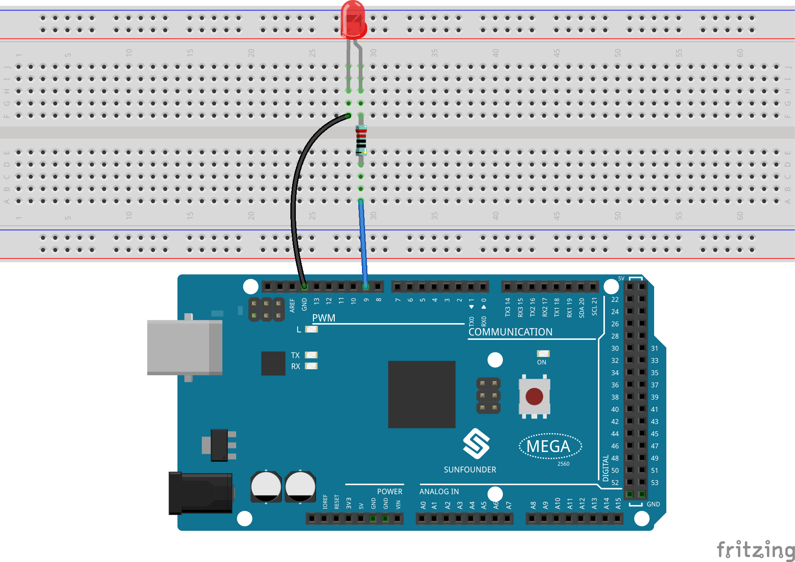
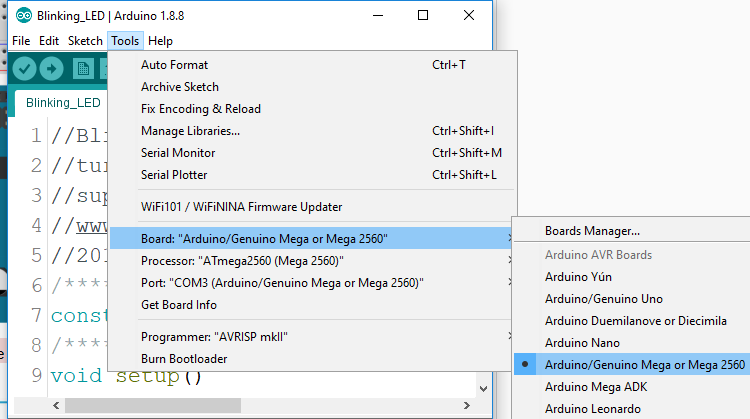
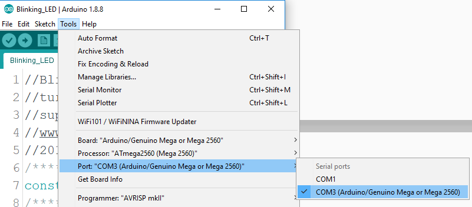
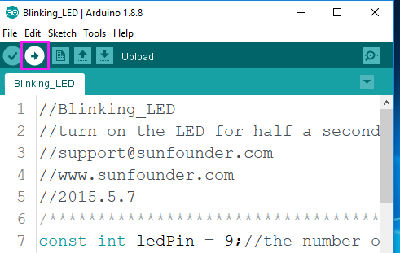
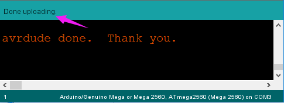

1.2 Digitales Schreiben¶
Überblick¶
Die Anweisung digitalWrite () wird hier verwendet, um hohem oder niedrigem Pegel in die Pins zu schreiben und die LED und den aktiven Summer 「arbeiten」 oder 「stoppen」 zu lassen. In dieser Lektion nehmen wir LED als Beispiel, um das Experimentphänomen vorzustellen.
Erforderliche Komponenten¶

Bemerkung
Informationen zur Hardware finden Sie in Teil 2.
Fritzing Circuit¶
In diesem Beispiel verwenden wir den digitalen Pin 9, um die LED anzusteuern. Verbinden Sie eine Seite des Widerstands mit dem digitalen Pin 9 und den längeren Pin (Anode) der LED mit der anderen Seite des Widerstands. Verbinden Sie den kürzeren Pin (cathode) der LED mit GND.
Schematische Darstellung¶

Code¶
Schließen Sie nach Abschluss der Schaltungsverbindung die Mega2560-Karte an den Computer an. Führen Sie die Arduino-Software-IDE aus und geben Sie die folgenden Codes ein.
Bemerkung
Sie können die Datei 1.2digitalWrite.ino auch im Pfad von sunfounder_vincent_kit_for_arduinocode1.2digitalWrite öffnen, um die Codes zu verwenden.
Laden Sie die Codes auf die Mega2560-Karte hoch, und Sie können das Blinken der LED sehen.
Code-Analyse¶
Hier verbinden wir die LED mit dem digitalen Pin 9, daher müssen wir zu Beginn des Programms eine int-Variable namens ledpin deklarieren und den Wert 9 zuweisen.
const int ledPin = 9;
Initialisieren Sie nun den Pin in der Funktion setup (), wo Sie den Pin in den OUTPUT-Modus initialisieren müssen.
pinMode(ledPin, OUTPUT);
In loop () wird digitalWrite () verwendet, um ein 5-V-Hochpegelsignal für den LED-Pin bereitzustellen, das eine Spannungsdifferenz zwischen den LED-Pins und dem Aufleuchten der LED verursacht.
digitalWrite(ledPin, HIGH);
Wenn das Pegelsignal auf LOW geändert wird, wird das LEDPin-Signal auf 0 V zurückgesetzt, um die LED auszuschalten.
digitalWrite(ledPin, LOW);
Ein Intervall zwischen Ein und Aus ist erforderlich, damit die Benutzer die Änderung sehen können. Daher verwenden wir einen delay(1000) Code, damit der Controller 1000 ms lang nichts tut.
delay(1000);
※ Wie laden Sie die Skizze hoch¶
Bevor Sie einen geschriebenen Code auf Arduino hochladen, müssen Sie zuerst Karte und Port auswählen.
Klicken Sie auf Extras -> Karte und wählen Sie Arduino / Genuino Mega oder Mega 2560.
Wählen Sie dann Tools ->Port. Ihr Port sollte sich von meinem unterscheiden.
Schritt 4: Laden Sie die Skizze auf das SunFounder Mega2560-Board hoch. Klicken Sie auf das Symbol Hochladen, um den Code auf die Steuerkarte hochzuladen.
Wenn unten im Fenster „Hochladen abgeschlossen“ angezeigt wird, bedeutet dies, dass die Skizze erfolgreich hochgeladen wurde.
Phänomen Bild¶